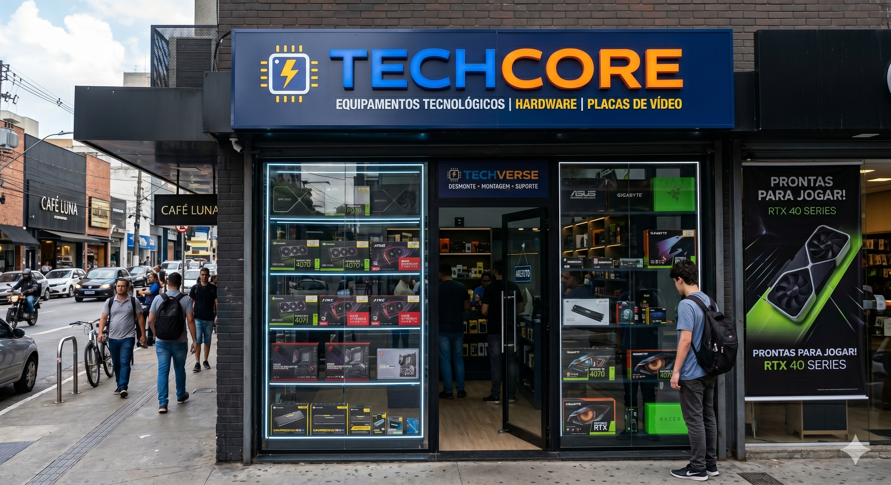

Conheça a história e os valores da TechCore Hardware.

TechCore Hardware nasceu em 2020, fundada por um grupo de 4 pessoas entusiastas de Tecnologia que compartilhavem o sonho de levar componentes de alta perfomance ao alcance de todos em Campina Grande e região. O que começou como uma pequena loja no centro da cidade rapidamente ganhou a confiança de gamers, profissionais de TI e estudantes de computação.
Ao longo dos anos, investimos em capitação constante da equipe,ampliam os nosso estoque e passamos a trabalhar diretamente com distribuidores oficiais das maiores marcas do mundo. Hoje, somos reconhecidos como refrerência em hardware no Nordeste.
Nossa missão é simples: Oferecer a melhor Experiencia em Hardware,desde a escolha do componentes certo até a montagem e suporte pós-venda.
Os marcos importantes da nossa trajetória:
| Indicador | Resultado |
|---|---|
| Anos no Mercado | 6 anos |
| Clientes atendidos | Mais de 10.000 |
| Produtos em estoque | Mais de 500 itens |
| Marcas parceiras | 8 Marcas |
| Satisfação dos clientes | 90% |
Democratizar o acesso a hardware de alta perfomance, oferencendo produtos de qualidade, atendimento especializado e preço justo.
Ser a maior e mais confiável loja de hardware do Nordeste até 2030,expandido para todo o Brsil via e-comemrce
.2026 TechCore Hardware| Campina Grande PB
Home
Quem Somos
Serviços
Equipe
Contato